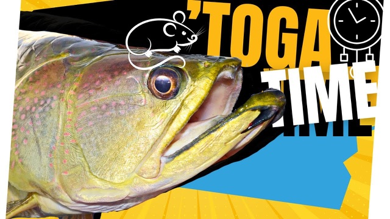

Starlo Gets Reel
Surface action on saratoga and tarpon
Monday 9 September 2024
Starlo Gets Reel
Monday 9 September 2024


Originally broadcast on Starlo Gets Reel. Watch on Starlo Gets Reel.
Corroborate Billabong in the Top End of Australia's northern territory is a very special place, particularly for those fortunate enough to experience its magical awakening at 1st light. This morning, Steve Peach, Paul Gordon, and I have joined gunfishing guide, Glenn Watty Watt, of Barefoot Fishing Safaris, for a fly rod foray on the Billabong, and expectations are running pretty high. This up. And you reckon they'll be right in on the edge or around the Louise?
I just get us up to a bit more dense a lily patch. They just everywhere. Woody and I have been mates for over 15 years, and I've learnt to listen to his advice. When you get a hit from, you got to really bully him out of those lilies, eh?
Keep pulling on that line. Yeah, Togo sort of, they're sort of sharkers, they swim up to it and eat it, whereas the barrels, they sneak along underneath it and then boof it when it's the right time. Oh, get a looker. Yep.
Nice shot. Put them right up there in the jungle. Yeah. And you bet if you hook one back in there, it's just a hand line it through the rod.
You point the rod straight at it and just go... Yep. Oh, there's something on mine. There's something on one.
Yeah, I saw that. Little barrow, I think, and the sound of it, maybe. Oh, one under that lily. one under mine.
Gotta look for something? Little stiff. If we're riding peak hour right now, aren't we? Yeah. Peachy spot on.
It's the witching hour for Saratoga and Barramundi. Before the intense heat of the day really kicks in. Oh, come on. Ooh.
What he's pretty confident and with good reason. Yep, give him some. He's not real big. Yay! Here we go.
Yeah, they're all right to handle these guys. Yeah, yeah, they're all good. Yeah. There he is. Pull the fly out.
First blood for Peachy. A pretty little Saratoga. There we go. All right.
Let's get him back in, eh? M. All right. We're casting surface flies off our 7 to 9 weight outfits, rigged with full floating lines.
It's my favourite way to target these fish. It's just so visual and hands-on. Oh, and me. Just a bit non-committal, don't they?
Yeah, I had a couple of days at the start there. Oh. Far out, that was fast. There's no shortage of top water action at this time of day, although pinning them can be another matter. Mmm. Something like this.
Oh, there we go. Here we go. Is that a long time, or...? No, what's happening? Oh, no. Nice.
Another species? Yeah. Oxeye herring or tarpon? Yes.
Not quite like the American ones. Still a bit of fun. Gee, you got that right down. Love that little brown, right, don't they?
Sorry, mate. I don't need the pliers for this, I think. What he manoeuvres us slowly, parallel to the dense mat of lilies as we pepper the edges and pockets with our flies. Something up?
Oh, and me. Oh, double. That's the shot. As the sun gets up, they'll work the outsides of it real early. But I'd expect them to already be starting to cut back into cover.
Yeah. Oh, you see him shoot over for that. Mm, he's still honoured, I reckon. You still there?
What do you reckon that was? Small tiger. Tiger? Jeez, he took off across to it, didn't he?
Yeah, they keep an eye out above. There he is. He still there? still on it.
Oh, get him as he goes back home. It's when you know they're really on the job when they start chasing them in the air. Yeah. Yep.
Oh, bull. Just pull. That's oh, he's a nice target, too. You going to lead her in, Stella?
Yeah. Just let him... Straight rod, fully. He's around the lily pad.
He'll come off. He's out. Lead him around this left hand side. Nice fish.
That's a proper one. Yeah, it's better. Nice job. Beautiful.
Well done, mate. Thank you. You got him? I think so.
over the top there. Yep. Who is? Aren't they beautiful?
He went a little bit harder that time. Beautiful. Mate, that brown rat is doing the job, isn't it? Yeah.
All right. I don't think we're going to do any gentle slow motion releases holding him in the water here. Let's chuck him straight back in, eh? Yeah, that's fine, yeah.
Self-release. Well done, mate. Good job. Do you want to put a brown one on, Starlow?
Nah, I don't think it makes much difference. It's a bit harder to get in your head than it is to get in other people's heads sometimes. Harder to what? get in your head.
Harve to psych you out. No, we're... Yeah, riding that same line. Okay. Yep.
Whoop. Hold just had a looker. Oh, yeah, he's come over to it too. Oh, there we go.
Yeah, he's a big one too. Yeah, we'll have to go in. Yep, you want me to loot it? Yeah, yeah.
Yeah, he's a good one. It's only a 20 pound litre I've got on, so... Got it? Here, mate.
Hang on. Oh, he's not that big. Three now. Yeah, he's all good.
He's a proper one. Reach down in there. Oh, good one, mate. Yeah. Nice, still, I believe, mate.
Thank you. That's a proper one. I used to be. That's a catch. Ah, thank you.
Yeah, the paternal mouth rooter. They are just the most magnificent fish. I love the Saratoga, bit of a totem fish of mine, I reckon. Osteoglossidae.
There's seven members of them worldwide, this family, they're living fossils. They're all mouth brooders, so they actually hold the eggs in their mouth, and then when the young hatch, they can swim back into the adult's mouth for protection. They let them out for a feed. Might get you to extract the flyer, too.
No worries. Oh, it's well in there. I'm going to need the plate. Yep. Could be.
High 50s, wouldn't he? 5058. be up there? Oh, I'll give him a quick measure, yeah.
There we go. Where is your closest mat? Mm 59.
That's good. That'd be overestimating. Yeah. All right. Bit of a messy release, but, you know, you get that.
Oh, haven't been here for quite a few years. I spent a lot of time here on corroborate. Over the years, absolutely loved the place, and loved the fishing, and the Saratoga, to me, are one of the big draw cards here. It's just worth coming for them alone, let alone the scenery on the wildlife.
What a magnificent part of the world. That's a great fish, mate. Well done. He, uh, he really wanted that, that 15.
He did, yeah. He sucked it well back in. And, you know, he attacked it from a metre away. Yeah, yeah, he bow waved over and soon as it moved.
Oh, yeah, I've got him. What have you got? That looks like a tarpoon. Yeah, if you keep them in the air, it's harder for them to get tangled up.
Exactly. Drag them across the tops of things while they're jumping. Actually, you wrote an article about when to implement the high stick or something, didn't you? There he is. Little bong fishing.
Little tarpon? A quick... There he goes. The bike's already slowing as the sun climbs higher.
But we reckon there's still time for a few more hookups. That was something. Where was it tiny? Just need a little barrow now, and we've got the trifecta. Yeah.
You see him swirl under that? Stick yours there, Steve. I think it's only a tarpon. Oh, yeah, tarponos.
Oh, I got him. Nice, go for it. Oh, yes. Nice car, that's a little toggy.
Might be a barr. That's a tarpon. Yep, it's a little bit better one, though. You right?
Yep. There he is. Yeah, the cool little fish. Very cool guys.
Good fun. Lots of them up here. All right. There he goes.
There you go. Is that a Barry, you reckon? Oh, they're tarpon, I think. Oh, wow.
Got him this time. That's a... that's a... a pretty big tarpon. How's the jump? Solid tarppy.
Yeah he's a good one. Grabbing tight. There we go. He's got... properly in this time.
Oh There we go. Yeah. Oh, that's a toga.
I got him. Tuck the ball on him. Oh, no, Starlet. I lost my ring.
lost me grip on me stringy. And he fell off. Did you get that out of my back? Is this pretty typical for the fishing here, Watty?
Yep. Probably might have expected a couple more togas by now, but... Oh, mate, this is pretty good fun. Hey. You reckon it was.
Tarpon? Tarp, that one's a tarp. That first one might have been a little toga. Sorry, mate.
It's a bit ambitious for them fishing for them in the trees, Scala. Oh, yeah. I remember when we first started catching them on the frogs on the bake casters and everything way back there. Remember the old the scumfrogs and the bass rats? We used to throw them back in where you couldn't even see any water over the tops and you'd hear...
Oh, God, even you'd have to try and pull them over the top and oh, it was so much fun. We lost so many fish. Oh, that was a decent fish. I'm going to follow you on a seat.
teased him. Oh, no, we're still there. Yeah, I got it, got him. Oh, well done.
That's only a tarpon. I thought that was a small toga. I think it might have been a toga the 1st time. Yeah, I think so too.
There he goes. Have a go in there, mate. You might still be there. Oh, wow.
Oh! Oh, that's moving a bit of water. What is that? Oh, if that was a top or a toga?
Oh, pogie. That's a nice toga. Yes, it is. He's around that lily pad, though.
He's clear. It's not exactly finesse fishing, is it? Finesse, like, weightlifting. I suppose.
Good fish, mate. Good fish. Yeah, that's a proper one. Yeah.
Nice. He's in the '50s. Thank you, mate. There he is guys.
What lovely fish, eh? All right. Let's get that right out of his mouth. All right.
Well, I'm back in. How big do you reckon he is, Glenn? Maybe 50? Yeah, he's probably...
52, 50 feet? Yeah, maybe 3 or four, yeah. Yeah. All right.
Always, so a couple of centimetres longer. Well done, mate. With the sun well and truly up now. The surface action shutting down.
Just like the other local hunters, we could easily go deeper and keep catching them using sinking lines and weighted flies, but we reckon we've had the best of it. Time to hit the road. Well, good little session, boys. Really good.
Yeah. Thanks seated, mate. expectations about their margin. We've got a couple of good toga there.
Yeah. Billabong fishing like this is available virtually year round, although the period from May to about November is the peak time. If you'd like to experience this sort of action, or any one of a dozen other styles of Top End sport fishing, get onto Watty's Barefoot Fishing Safaris website. It's a ripper.
And if you'd like to learn more about corroborate, there's a hotspots and honeyholes area guide dedicated to the Billabong on my free Fishertopia website. I'll put the links to that and a brief listing of the gear that we were using in the description and comments down below. Don't forget to check out Peachey's Fly Fishing Channel on YouTube too. And if you enjoyed this one, hit the thumbs up down below.
Oh, and here's another couple of my fly fishing videos that I reckon you might like.